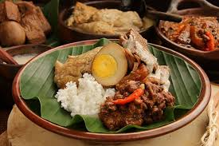
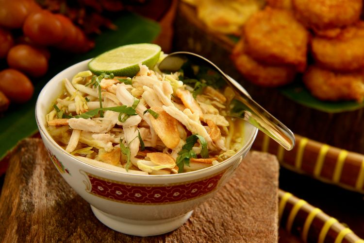
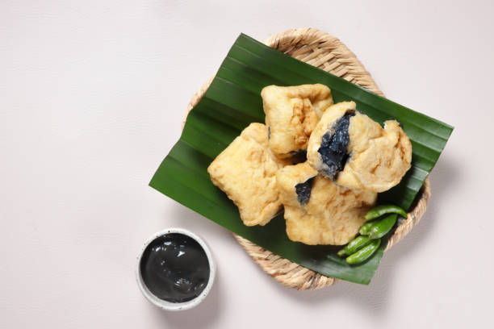
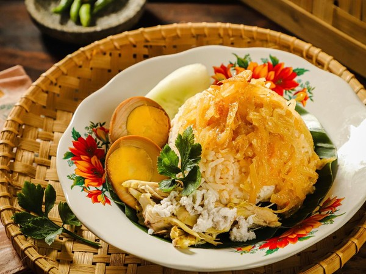
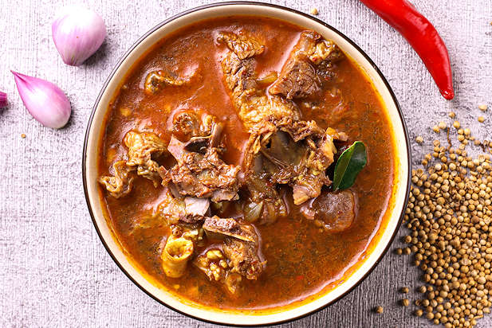

Gudeg
Makanan manis dari nangka muda dimasak dengan santan khas Yogyakarta dan Jawa Tengah.
Bahan-bahan:
- 1 kg nangka muda, potong-potong
- 500 ml santan kental
- 200 gr gula merah
- 5 siung bawang merah
- 3 siung bawang putih
- 2 cm lengkuas, memarkan
- 2 daun salam
- 1 sdt garam
- 500 ml air kelapa
Cara membuat:
- Rebus nangka muda dengan air kelapa hingga empuk.
- Tumis bawang merah, bawang putih, lengkuas, dan daun salam hingga harum.
- Masukkan tumisan dan gula merah ke dalam rebusan nangka, aduk rata.
- Tambahkan santan dan garam, masak dengan api kecil hingga santan meresap dan kuah mengental.
- Sajikan dengan nasi, telur pindang, dan ayam opor.

Soto Kudus
Soto ayam dengan kuah bening dan rasa khas dari Kudus, lengkap dengan koya dan kerupuk.
Bahan-bahan:
- 500 gr ayam kampung, potong
- 2 liter air
- 5 siung bawang putih
- 8 siung bawang merah
- 2 cm jahe
- 2 cm lengkuas, memarkan
- 2 batang serai, memarkan
- Garam dan merica secukupnya
- Soun, tauge, daun bawang, dan koya untuk pelengkap
Cara membuat:
- Rebus ayam dengan air hingga empuk, angkat dan suwir-suwir dagingnya.
- Tumis bawang putih, bawang merah, jahe, lengkuas, dan serai hingga harum.
- Masukkan tumisan ke air rebusan ayam, bumbui garam dan merica, didihkan kembali.
- Sajikan kuah soto dengan suwiran ayam, soun, tauge, dan taburan daun bawang serta koya.
- Tambahkan kerupuk sebagai pelengkap.

Tahu Petis
Tahu goreng yang disajikan dengan saus petis manis khas Semarang.
Bahan-bahan:
- 10 potong tahu putih, goreng hingga kecokelatan
- 100 gr petis udang
- 3 siung bawang putih, haluskan
- 2 cabai merah, haluskan
- 2 sdm gula merah, serut
- 100 ml air
- Minyak untuk menumis
- Garam secukupnya
Cara membuat:
- Panaskan minyak, tumis bawang putih dan cabai hingga harum.
- Masukkan petis, gula merah, air, dan garam. Masak hingga mengental dan berminyak.
- Siram saus petis di atas tahu goreng saat disajikan.
Wingko Babat
Kue tradisional Jawa Tengah berbahan dasar kelapa parut dan tepung ketan.
Bahan-bahan:
- 200 gr kelapa parut
- 150 gr tepung ketan
- 150 gr gula pasir
- 100 ml santan kental
- 1/4 sdt garam
- Margarin untuk olesan
Cara membuat:
- Campur kelapa parut, tepung ketan, gula, dan garam hingga rata.
- Tambahkan santan, aduk hingga adonan bisa dipulung.
- Bentuk bulat pipih, oles margarin di atasnya.
- Panggang dalam oven suhu 180°C selama 20-25 menit hingga kecokelatan.
- Dinginkan sebelum disajikan.

Nasi Liwet Solo
Nasi gurih khas Solo dimasak dengan santan, daun salam, dan disajikan dengan aneka lauk.
Bahan-bahan:
- 2 gelas beras
- 400 ml santan
- 2 lembar daun salam
- 2 batang serai, memarkan
- 5 siung bawang merah, iris tipis
- 3 siung bawang putih, iris tipis
- 1 sdt garam
- Minyak untuk menumis
Cara membuat:
- Tumis bawang merah dan bawang putih hingga harum.
- Masukkan serai dan daun salam, aduk sebentar.
- Tambahkan beras, aduk hingga tercampur rata.
- Tuang santan dan garam, masak hingga santan menyusut.
- Kukus hingga nasi matang sempurna.
- Sajikan dengan ayam suwir, telur pindang, dan sambal goreng.

Tengkleng
Sup tulang kambing berkuah gurih dan pedas khas Solo yang kaya rempah.
Bahan-bahan:
- 1 kg tulang kambing
- 500 gr daging kambing
- 3 liter air
- 5 siung bawang merah
- 3 siung bawang putih
- 3 cm jahe
- 3 cm lengkuas, memarkan
- 2 batang serai, memarkan
- 5 daun jeruk
- 3 cabai merah, iris serong
- Garam, gula, dan merica secukupnya
Cara membuat:
- Rebus tulang dan daging kambing hingga empuk, buang busa.
- Tumis bawang merah, bawang putih, jahe, lengkuas, serai, dan daun jeruk hingga harum.
- Masukkan tumisan ke rebusan kambing, tambahkan cabai, garam, gula, dan merica.
- Masak dengan api kecil hingga bumbu meresap dan kuah agak mengental.
- Sajikan panas dengan taburan bawang goreng dan nasi hangat.